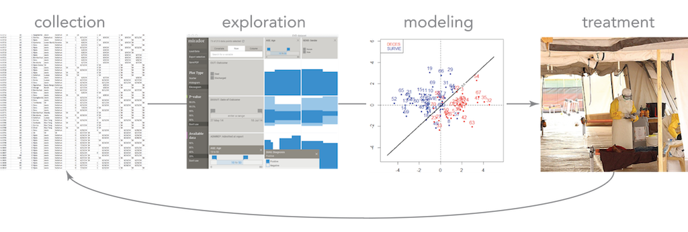
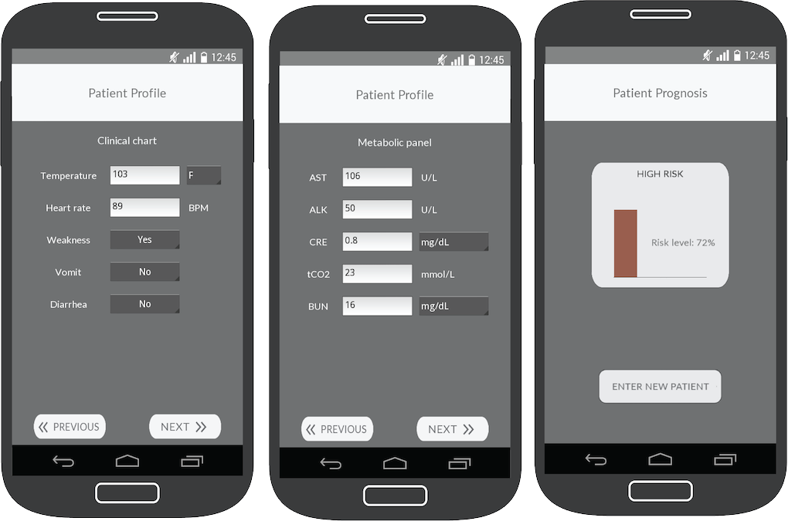

mirador
Ebola Prognosis Prediction
Computational Prognosis of Infectious Diseases
Based on publicly available clinical data of Ebola Virus Disease (EVD) patients from Sierra Leone, we developed a computational framework that integrates exploratory visualization tools with a flexible Machine Learning (ML) pipeline. The goal of this approach is to construct predictive models that could help health care workers in the field to better prognosticate and treat patients. These models would complement rapid diagnostics kits (such as 1 and 2) and data-entry devices, and thus closing a loop linking data visualization and statistical modeling with patient treatment and data collection:
Direct actionable knowledge obtained from outbreak data would further encourage collection of more and better data, as well as open access needed for rapid outbreak detection and response. We have made the source code of our ML fully available and documented on Github.
Ebola CARE app
The predictive models for EVD prognosis generated with our ML pipeline are packaged as a mobile app for Android devices, called Ebola CARE (Computational Assignment of Risk Estimates), freely available at the Google Play Store. This app can be easily updated to reflect newer models trained with more complete clinical data from EVD patients.
More information
Image credits: Médecins Sans Frontières, Freakonometrics